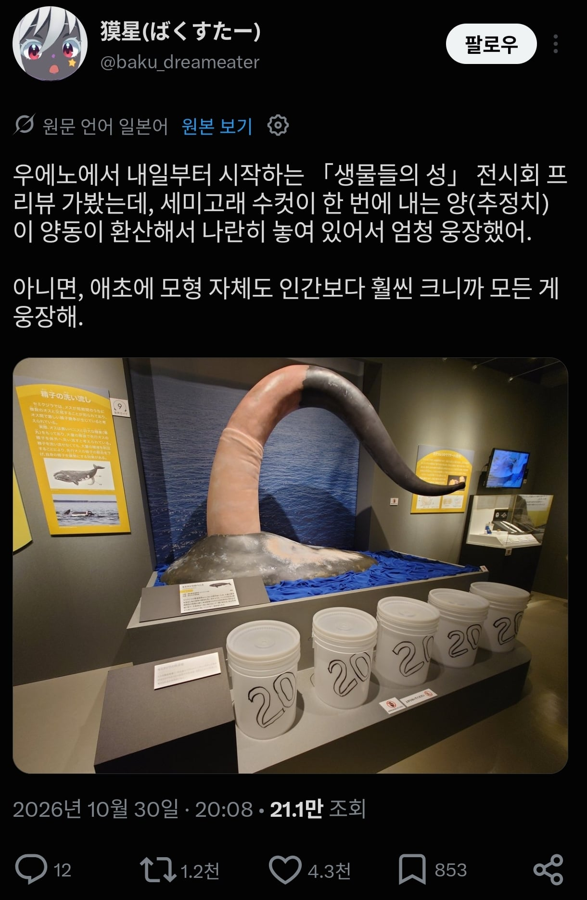

이런 지식이 도대체 왜 필요한 건데

이런 지식이 도대체 왜 필요한 건데
일단 육식성 플랑크톤은 확실히 좋아 죽을 듯
쟤네들 불알은 체내에 있는거겠지?
바다괴물에 대한 전설이 실은 선원들이 고래 자지를 보고 괴물로 착각해서 생겨난 이야기가 아니냐는 말이 있더라
크다 커!! -> 크라켄으로 전승되었다는 썰이 있음
ㅋㅋ
저걸 봤다면 믿을수밖에없어..
살다살다
방탄모가 넘쳐흘러 자그마치 세개의 방탄모를 가득 채웠으니 근출이의
오고고고곡 오고고고고곡 ❤️❤️❤️❤️❤️❤️❤️
네스호의 네시가 좆일수도 있대
저거 세어나오면 다른 물고기들 먹으러 달려드나?